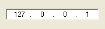

IPAddressGadget()
Syntax
Result = IPAddressGadget(#Gadget, x, y, Width, Height)Description
Creates an IPAddress gadget in the current GadgetList. It allows you to easily enter a full IPv4 address.
Parameters
#Gadget A number to identify the new gadget. #PB_Any can be used to auto-generate this number. x, y, Width, Height The position and dimensions of the new gadget.
Return value
Returns nonzero on success and zero on failure. If #PB_Any was used as the #Gadget parameter then the return-value is the auto-generated gadget number on success.
Remarks
A 'mini help' can be added to this gadget using GadgetToolTip().
The following functions can be used to act on this gadget:
- GetGadgetState(): Returns the current IP address (Use IPAddressField() to get the value of each field).
- SetGadgetState(): Changes the current IP address (Use MakeIPAddress() to build a valid IP address).
- GetGadgetText(): Returns the current IP address as text, in decimal dotted form ("127.0.0.1", for example).
- SetGadgetText(): Only used to clear the IP address contents, by passing an empty string.
Example
If OpenWindow(0, 0, 0, 180, 50, "IPAddressGadget", #PB_Window_SystemMenu | #PB_Window_ScreenCentered) IPAddressGadget(0, 10, 15, 160, 20) SetGadgetState(0, MakeIPAddress(127, 0, 0, 1)) ; set a valid ip address Repeat : Until WaitWindowEvent() = #PB_Event_CloseWindow EndIf

See Also
GetGadgetState(), SetGadgetState(), GetGadgetText(), SetGadgetText(), IPAddressField(), IPString(), MakeIPAddress()
Supported OS
All